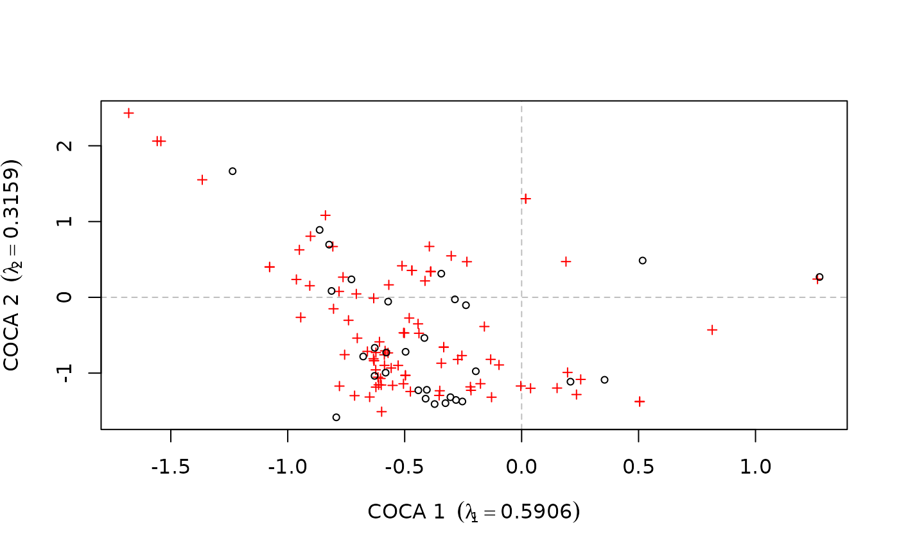
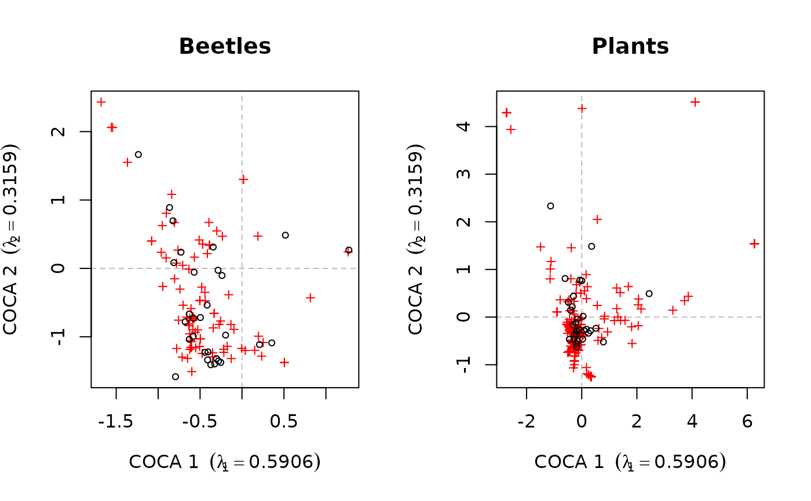
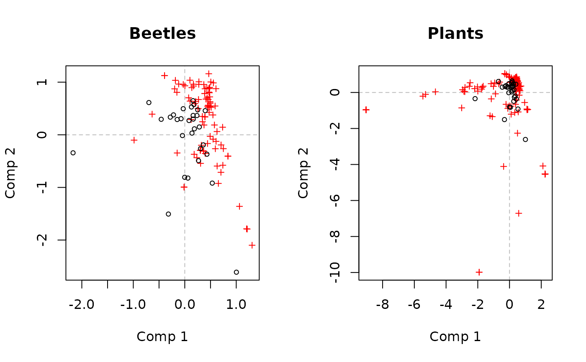
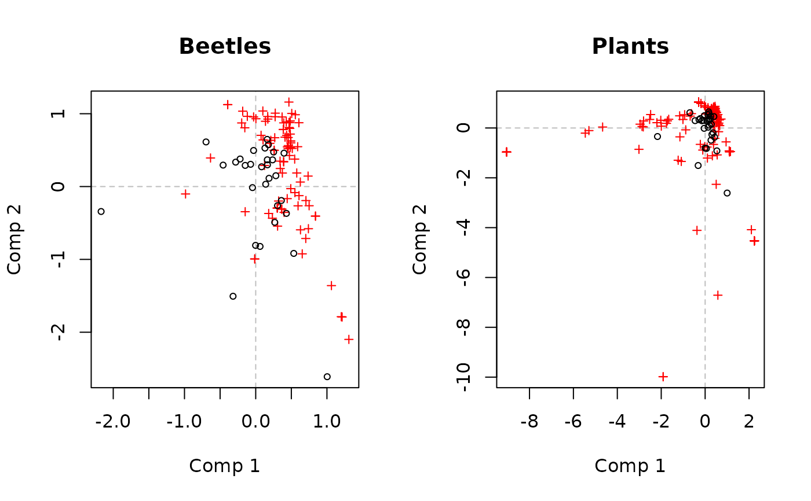

Biplots of co-correspondence analysis models
biplots.RdProduces biplots of the response and predictor from the results of a co-correspondence analysis models.
# S3 method for class 'symcoca'
biplot(x,
which = "y1",
choices = 1:2,
benzecri = TRUE,
type = NULL,
xlim = NULL,
ylim = NULL,
col.species = "red",
col.sites = "black",
pch.species = 3,
pch.sites = 1,
cex = 0.7,
main = "",
sub = "",
ylab, xlab,
ann = par("ann"),
axes = TRUE,
...)
# S3 method for class 'predcoca'
biplot(x,
which = "response",
choices = 1:2,
type = NULL,
xlim = NULL,
ylim = NULL,
col.species = "red",
col.sites = "black",
pch.species = 3,
pch.sites = 1,
cex = 0.7,
main = "",
sub = "",
ylab, xlab,
ann = par("ann"),
axes = TRUE,
...)Arguments
- x
an object of class
"symcoca", the result of a call tosymcoca.- which
character; should the response or predictor scores be plotted. Can be specified in several ways: response choices are one from
c("y", "Y", "y1", "response"); predictor choices are one fromc("x", "X", "y2", "predictor").- choices
a vector of length 2 indicating which predictive CoCA axes to plot.
- benzecri
logical, should a Benzecri plot be drawn? Such plots draw species scores, scaled by the quarter root of the respective eigenvalues, with unscaled site scores. A Benzecri plot is the recommended biplot for symmetric CoCA. See
scores.symcoca.- type
one of
"points", or"text". Determines how the site and species scores are displayed. Iftype = "points", scores are plotted as points. Iftype = "text", then the row names of the scores matrices are plotted.- xlim, ylim
limits for the x and y axes. If non supplied, suitable limits will be determined from the data.
- col.species, col.sites, pch.species, pch.sites
colours and plotting characters used when plotting the species and sites scores.
- cex
numeric; scaling factor when drawing points or text labels.
- xlab, ylab
labels for the x and y axes. If non supplied suitable labels are formed from the result object.
- main, sub
the main and sub titles for the plot.
- ann
logical, if TRUE plots are annotated and not if FALSE, currently ignored.
- axes
a logical value indicating whether axes and plot border should be drawn on the plot.
- ...
other graphical parameters as in 'par' may also be passed as arguments.
References
Ter Braak, C.J.F and Schaffers, A.P. (2004) Co-Correspondence Analysis: a new ordination method to relate two community compositions. Ecology 85(3), 834–846
See also
Examples
## symmetric CoCA
data(beetles)
data(plants)
## log transform the beetle data
beetles <- log(beetles + 1)
## fit the model
bp.sym <- coca(beetles ~ ., data = plants, method = "symmetric")
#>
#> Removed some species that contained no data in: beetles, plants
## draw a biplot of the beetle results
biplot(bp.sym)

## biplot of both - Fig 1 in ter Braak & Schaffers (2004)
layout(matrix(1:2, ncol = 2))
biplot(bp.sym, which = "y1", main = "Beetles")
biplot(bp.sym, which = "y2", main = "Plants")

layout(1)
## predictive CoCA
bp.pred <- coca(beetles ~ ., data = plants)
#>
#> Removed some species that contained no data in: beetles, plants
## draw a biplot of the response
biplot(bp.pred)
 ## recreate Fig 3 in ter Braak & Schaffers (2004)
layout(matrix(1:2, ncol = 2))
biplot(bp.pred, which = "response", main = "Beetles")
biplot(bp.pred, which = "predictor", main = "Plants")

layout(1)
## recreate Fig 3 in ter Braak & Schaffers (2004)
layout(matrix(1:2, ncol = 2))
biplot(bp.pred, which = "response", main = "Beetles")
biplot(bp.pred, which = "predictor", main = "Plants")

layout(1)